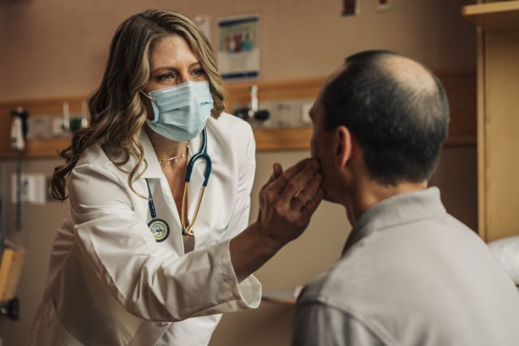

Welcome
Welcome to Evergreen Hospital! We are honored to have you choose us for your healthcare needs. At Evergreen Hospital, we are dedicated to providing the highest quality of care in a compassionate and welcoming environment. Our team of skilled doctors and support staff are committed to ensuring that you receive personalized, patient-centered care. We understand that a hospital visit can be overwhelming, so we strive to make your experience as comfortable and stress-free as possible. With our state-of-the-art facilities and the latest medical technologies, we offer a wide range of services tailored to meet the unique needs of each patient. Whether you are here for a routine check-up, a specialized treatment, or a surgical procedure, we are here to support you every step of the way. Our focus is not only on treating illnesses but also on promoting overall health and well-being. We believe in the power of communication and transparency and will work closely with you and your loved ones to ensure that you are fully informed and involved in your care decisions.
Healthcare Services
Evergreen Hospital is dedicated to providing a full spectrum of healthcare services designed to meet the diverse needs of our community. From routine check-ups to specialized treatments, we are committed to delivering exceptional care in a compassionate and patient-centered environment. Our state-of-the-art facilities are equipped with the latest technology, ensuring accurate diagnoses and effective treatments. We offer a wide range of services, including primary care, emergency medicine, surgery, and advanced diagnostic imaging. Our team of highly skilled physicians, nurses, and support staff work collaboratively to create personalized treatment plans that address each patient's unique needs. At Evergreen Hospital, we prioritize not only the physical health of our patients but also their emotional and psychological well-being.

In addition to our core medical services, Evergreen Hospital provides specialized programs aimed at enhancing overall health and wellness. Our dedicated departments for cardiology pediatrics are staffed by experts in their respective fields. We also offer comprehensive rehabilitation services, including physical therapy and occupational therapy, to support patients in their recovery journey. Our commitment extends beyond the walls of the hospital with community outreach programs and wellness initiatives designed to promote healthy living and preventive care. By integrating advanced medical care with community support, Evergreen Hospital stands as a beacon of hope and health, ensuring that our patients receive the highest quality care throughout their entire healthcare journey.
Meet Our Expert Medical Team
At Evergreen Hospital, our medical team stands at the forefront of healthcare excellence, bringing together a wealth of expertise and a shared commitment to patient care. Our physicians, surgeons, and specialists are distinguished by their exceptional credentials, extensive experience, and dedication to advancing medical practice. Each member of our team is board-certified in their respective fields, ensuring that patients receive care from some of the most qualified professionals in the industry. From renowned cardiologists and oncologists to skilled orthopedic surgeons and pediatricians, our experts are adept at managing complex medical conditions and delivering personalized care. Our team collaborates seamlessly and innovative approaches to provide comprehensive treatment plans tailored to each patient's needs.
Moreover, our commitment to continuous learning and improvement ensures that our medical team remains at the cutting edge of healthcare advancements. We invest in ongoing training and professional development, allowing our staff to stay abreast of the latest research, technologies, and treatment methodologies. This dedication to staying current enables our team to offer patients the most effective and innovative care options available. At Evergreen Hospital, we believe that a strong, multidisciplinary team approach is essential to achieving the best outcomes for our patients. Our medical professionals not only excel in their technical skills but also embody the values of compassion and respect. By fostering an environment where these qualities thrive, we ensure that each patient receives care that is not only clinically excellent but also deeply humane and supportive.
Patient-Centered Care
At Evergreen Hospital, patient-centered care is at the heart of everything we do. Our approach prioritizes the individual needs and preferences of each patient, ensuring that their experience is as personalized and supportive as possible. We recognize that every patient is unique, with their own health concerns, values, and lifestyle. Therefore, we tailor our care to align with these individual needs, involving patients in every step of their treatment process. From the moment you arrive, our dedicated team works to create a welcoming environment where your comfort and concerns are addressed with utmost respect and empathy. We believe that understanding and integrating your preferences into your care plan not only enhances your treatment experience but also contributes to better health outcomes.

Our commitment to patient-centered care extends beyond the clinical setting. We offer a range of services designed to support your overall well-being, including comprehensive education about your health conditions and treatment options. Our healthcare professionals take the time to listen to your questions and provide clear, detailed explanations to ensure you are fully informed and involved in decision-making. Additionally, we provide access to various support services such as counseling, nutrition guidance, and patient advocacy to address any additional needs you may have. By fostering open communication and a collaborative approach, we empower our patients to take an active role in their health journey. At Evergreen Hospital, we are dedicated to making your care experience as comfortable and effective as possible, always with your best interests at the forefront of our efforts.
THE SERVICES FROM OUR HOSPITAL
- EMERGENCY CARE SERVICES
- INTENSIVE CARE UNIT
- MATERNITY AND OBSTETRICS
- PEDIATRIC CARE SERVICES
- MENTAL HEALTH SERVICES
- CARDIOLOGY SERVICES DEPARTMENT
- SURGICAL SERVICES DEPARTMENT
- RADIOLOGY AND IMAGING
Ever-Green Hospital Staff
At Evergreen Hospital, the dedication of the hospital staff stand as a pillar of excellence in patient care. From the moment patients walk through the doors, they are met with a team of professionals who are committed to not only treating medical conditions but also providing holistic, empathetic support. The medical staff, including physicians, nurses, and specialists, are highly skilled and undergo continuous training to stay abreast of the latest advancements in medical science. This ensures that every patient receives top-notch care tailored to their individual needs. The nursing staff at Evergreen is particularly renowned for their tireless efforts and unwavering commitment. Their role extends beyond routine medical tasks; they offer comfort, reassurance, and a personal touch that is invaluable to patients and their families. In addition to the clinical staff
Medical Specialists in Ever-Green Hospital
- Cardiologist
- Pediatrician
- Orthopedic Surgeon
- Neurologist
- Oncologist
- Dermatologist
- Gastroenterologist
- Lung specialist